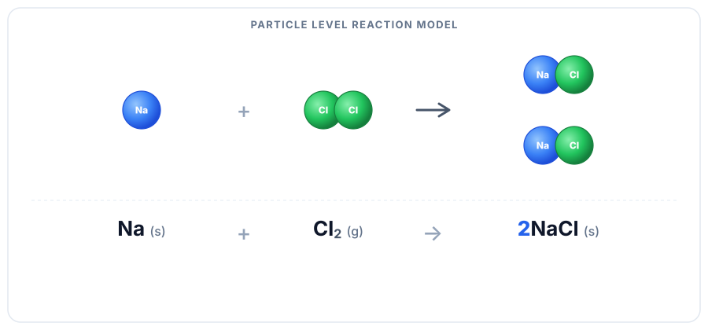
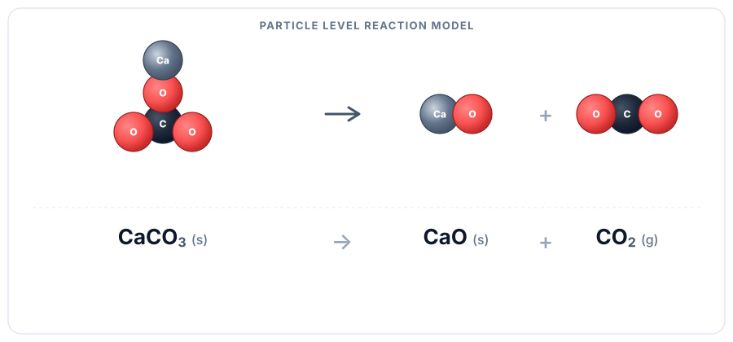
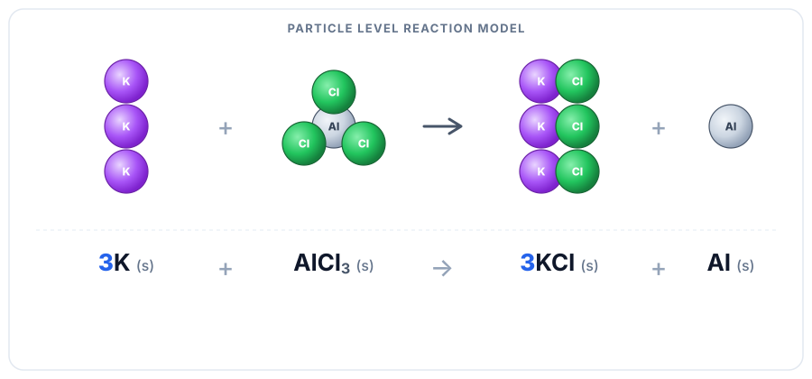
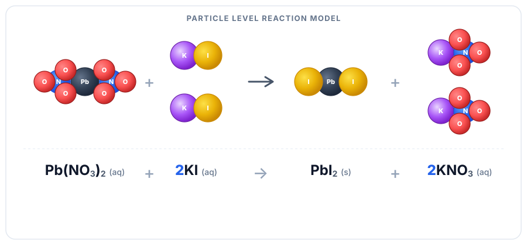
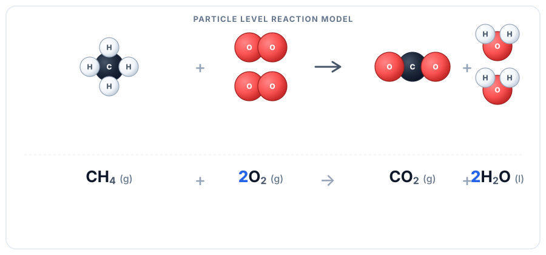

Chemical Reactions
This page helps you learn how to read a reaction, balance it without changing the chemistry, and use common patterns to predict products. It builds from the mole and sets up stoichiometry.
What you'll learn
8.1 Start Here: What a Chemical Equation Is Really Saying
A chemical equation is the chemist's shorthand for showing a reaction. It uses formulas instead of full words. The starting substances are the reactants. The new substances formed are the products. The arrow (→) means "produces."
An equation is not just something to balance. It tells you what changed, what formed, and how those substances are related.
Numbers in front of formulas are coefficients. They tell you how many particles or moles of each substance are involved. The small numbers inside a formula, like the 2 in H2O, are subscripts. Those belong to the substance itself. Do not change subscripts to balance an equation. Change coefficients only.
Do not miss this
- State symbols show the physical state of each substance.
(s)= solid,(l)= liquid,(g)= gas, and(aq)= dissolved in water.- Coefficients can change. Subscripts cannot, or you have changed the substance itself.
8.2 Balancing Chemical Equations Without Breaking the Formula
A balanced equation has the same number of each type of atom on both sides. This follows the Law of Conservation of Mass — atoms are never created or destroyed in a chemical reaction, only rearranged.
The two mistakes that keep showing up here: changing subscripts, and guessing coefficients without counting first. Start by treating balancing as organized accounting for atoms.
Put the correct formulas for reactants on the left and products on the right. Do not change any subscripts.
Make a tally of every element. Compare reactant count to product count. Identify which elements are unbalanced.
Place whole-number coefficients in front of formulas to make the atom counts equal. Balance one element at a time. Leave elements that appear in only one place on each side for last.
Recount every element on both sides. Make sure all coefficients are the smallest possible whole numbers (reduce if needed).
Step 1
Write the correct formulas
Start with the right substances in the right places. Keep every subscript exactly as written in the formula.
Step 2
Count atoms on both sides
Reactants
Products
The counts do not match yet, so the equation is unbalanced.
Step 3
Add coefficients only
Fix nitrogen first
Put 2 in front of NH3 so product nitrogen becomes 2.
Then fix hydrogen
Now products have 6 H, so put 3 in front of H2.
Step 4
Check and simplify
Everything matches, and the coefficients 1 : 3 : 2 are already the smallest whole-number ratio.
A common strategy
- Start with an element that appears in only one formula on each side.
- If a polyatomic ion stays together on both sides, you can often balance it as a unit.
- Hydrogen and oxygen are often easiest to finish last.
- If you feel tempted to change a subscript, stop. Go back and adjust a coefficient instead.
8.3 Reaction Types: How to Recognize the Pattern Fast
Most reactions fit into a small number of categories. Knowing the type helps you predict the products even before running the reaction.
Reaction type is about the pattern of change. Ask what is happening structurally: joining, breaking apart, replacing, swapping, or burning in oxygen.
| Type | Pattern | Simple Example |
|---|---|---|
| Synthesis | A + B → AB | 2Na + Cl2 → 2NaCl |
| Decomposition | AB → A + B | 2H2O2 → 2H2O + O2 |
| Single Replacement | A + BC → AC + B | Zn + 2HCl → ZnCl2 + H2 |
| Double Replacement | AB + CD → AD + CB | AgNO3 + NaCl → AgCl + NaNO3 |
| Combustion | fuel + O2 → CO2 + H2O | CH4 + 2O2 → CO2 + 2H2O |
Use the particle-level models below to connect each reaction label to an actual rearrangement of atoms. The pattern matters more than memorizing the name.





How to tell the five core types apart fast
Ask what the atoms are doing: joining, breaking apart, replacing, swapping, or burning in oxygen.
- Synthesis: smaller pieces join to make one product.
- Decomposition: one reactant breaks into smaller pieces.
- Single replacement: one element replaces another element in a compound.
- Double replacement: two ionic compounds swap ions.
- Combustion: O2 is a reactant, and oxides form. Hydrocarbon combustion commonly makes CO2 and H2O.
8.4 Precipitation Reactions: When Mixing Solutions Makes a Solid
A precipitation reaction happens when two solutions are mixed and a solid forms. The solid that forms is called a precipitate. Precipitates form because two ions combine to make an insoluble compound — one that does not dissolve in water.
To predict whether a precipitate forms, first swap the ions to predict the products. Then use solubility rules to decide whether one product stays dissolved or becomes a solid.
Start here if net ionic equations have felt mysterious. The decision is simpler than it looks: predict the two products, then ask which one does not stay aqueous.
Write the two possible products with the pattern AB + CD → AD + CB.
If one predicted product is insoluble, that product is the precipitate.
Split only the aqueous ionic compounds into ions. The unchanged ions are spectator ions, and the solid stays together in the net ionic equation.
Step 1
Start with two aqueous ionic compounds
Both reactants are dissolved, so the ions are free to meet and exchange partners in solution.
Step 2
Swap the ions
Positive ions switch negative partners. That gives the two predicted products AgCl and NaNO3.
Step 3
Check solubility and identify the precipitate
Because AgCl does not stay dissolved, it forms the solid precipitate while NaNO3 stays aqueous.
- A net ionic equation shows only the ions that actually change — the ones that form the precipitate.
- Ions that do not change are called spectator ions and are left out of the net ionic equation.
- If both products stay soluble, no precipitate forms and there may be no visible reaction.
8.5 Acid-Base Reactions: The Neutralization Pattern
An acid releases hydrogen ions (H+) in water. A base releases hydroxide ions (OH-) in water. When an acid and a base react, they neutralize each other. The products are water and a salt.
Think of it as a special double-replacement pattern. If you can spot H+ and OH- combining to make water, you can usually see the chemistry much faster.
In this unit, focus on strong acid + strong base neutralization reactions.
HCl + NaOH → H2O + NaCl
The net ionic equation for a strong acid–strong base neutralization is:
Step 1
Recognize acid + base
In water, the acid provides H+ and the base provides OH-. The other ions are along for the ride.
Step 2
Swap ions like a double replacement
The H+ pairs with OH- to make water. The remaining Na+ and Cl- form the salt.
Step 3
Focus on what actually changes
This is why the net ionic equation is so short: only the ions that form water belong in it.
- Acid-base reactions are a special type of double-replacement reaction.
- In these reactions, H+ from the acid reacts with OH- from the base to make water.
- The remaining ions form the salt.
8.6 Redox Reactions: Tracking Electron Transfer
In a redox reaction, electrons are transferred from one substance to another. This changes the oxidation number (charge bookkeeping) of the atoms involved.
If you are confused here, connect it back to Unit 03 · Atomic Structure. Redox is really about what happens when atoms gain or lose control of electrons during a reaction.
- Oxidation = losing electrons → oxidation number increases
- Reduction = gaining electrons → oxidation number decreases
Use this to keep the direction straight: OIL RIG — Oxidation Is Loss, Reduction Is Gain (of electrons).
Oxidation number rules (in order of priority):
2. Monatomic ions: oxidation number = ion charge (e.g., Na+ = +1)
3. Oxygen in compounds: usually -2 (except peroxides: -1)
4. Hydrogen in compounds: usually +1 (except metal hydrides: -1)
5. All oxidation numbers in a compound must add to 0
6. All oxidation numbers in a polyatomic ion must add to the ion charge
Use these examples to practice the rules above. Cover the oxidation number and work it out from the rules before you check.
- The substance that gets oxidized is called the reducing agent (it gives away electrons).
- The substance that gets reduced is the oxidizing agent (it accepts electrons).
- They always work in pairs.
Next step after Unit 08
Once you can read and balance a reaction correctly, the next move is to use the coefficients mathematically. Go to stoichiometry next, because that unit turns these balanced equations into real quantity predictions. To keep Unit 08 active, keep using the Unit 08 Practice page and the larger practice hub, then pair it with Why Practice Tests Beat Rereading for better mixed retrieval.